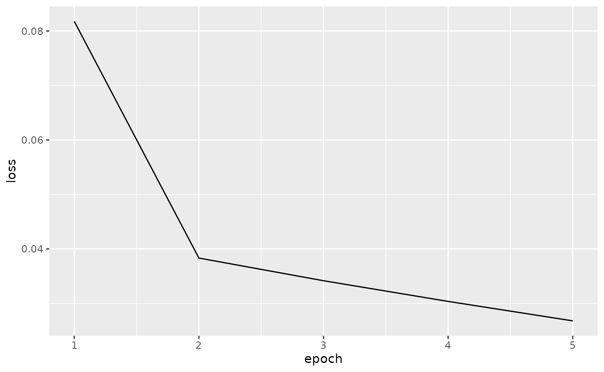
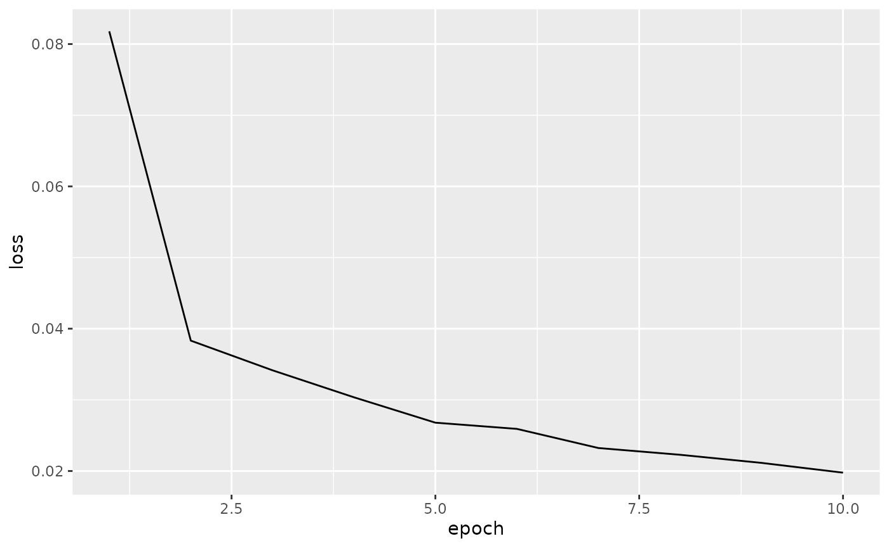
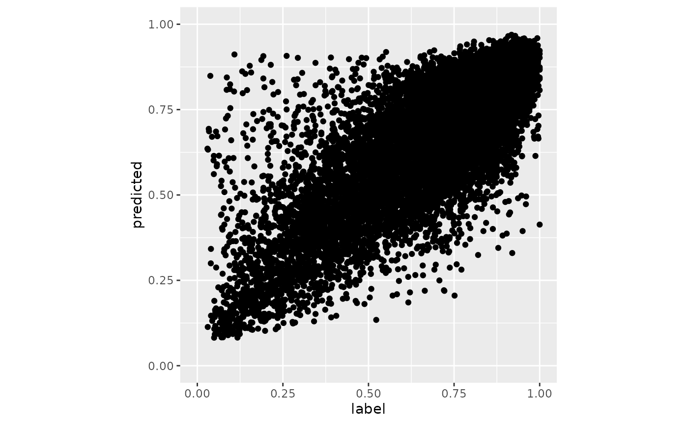

深度学习在计算机视觉以及自然言语处理等诸多领域取得重大成果，其技术现已被应用在包括生命科学在内的其它领域。深度学习主要通过构建深度神经网络来解决传统机器学习算法难以解决的问题。在诸多种深度学习的网络结构中，卷积神经网络（Convolutional neural network; CNN）以及循环神经网络（Recurrent neural network; RNN）最为人们熟知。其中，卷积神经网络在目标识别及目标检测等计算机视觉领域表现出色；循环神经网络则是在时间序列数据处理以及自然言语处理方面表现出色。在本次研习会上，我们考虑到众多 Bioconductor 用户熟悉于基因组序列分析，因此我们将讲解循环神经网络的基本算法以及如何使用 R 构建循环神经网络的方法。
在本次研习会上，我们主要使用 Torch (PBC 2021) 以及 coro (Henry 2021) 进行深度学习，并使用 tidyverse 进行可视化。
install.packages('tidyverse')
install.packages('coro')
install.packages('torch')
library('torch')
install_torch(timeout = 1200)重启 R，然后将 R 包加载。
library('tidyverse')
#> ── Attaching packages ─────────────────────────────────────── tidyverse 1.3.1 ──
#> ✔ ggplot2 3.3.5 ✔ purrr 0.3.4
#> ✔ tibble 3.1.5 ✔ dplyr 1.0.7
#> ✔ tidyr 1.1.4 ✔ stringr 1.4.0
#> ✔ readr 2.0.2 ✔ forcats 0.5.1
#> ── Conflicts ────────────────────────────────────────── tidyverse_conflicts() ──
#> ✖ dplyr::filter() masks stats::filter()
#> ✖ dplyr::lag() masks stats::lag()
library('coro')
#>
#> Attaching package: 'coro'
#> The following object is masked from 'package:dplyr':
#>
#> collect
library('torch')本次研习会中使用的数据集可以从 Wang D (2019) 等人的论文的补充文件中下载。由于时间有限，我们将使用已经整理好的数据。该数据储存在研习会 Intro2DNN 包里，另外还可以从 GitHub 下载。该数据包含 train.tsv 和 valid.tsv 文件，它们分别是训练集以及验证集。在这里，我们首先举个处理训练集 train.tsv 的例子。
train_fpath <- system.file('train.tsv', package = 'Intro2DNN')
crisprcas9_train_dataset <- read.table(train_fpath, header = FALSE, sep = '\t')
head(crisprcas9_train_dataset)
#> V1 V2
#> 1 0.6989796 GAACCCGACTATGTTCGCCTG
#> 2 0.8012376 GATACTTACTCATAAGTCAGG
#> 3 0.9363944 AAGTCATCACAGTAATACCCG
#> 4 0.8221612 GAACATACTCTACTTAGCAAG
#> 5 0.2443082 GCTGTGCACGAGAATCTAGCA
#> 6 0.4637551 GGTGCCACTGTCCCTCAAGGT如上所示，train.tsv 由两列组成。第一列是 guide RNA 的切割效率，第二列是 guide RNA 序列的 21 个碱基。
为了方便操作，我们把 train.csv 中的切割效率作为标签（因变量）储存至 y_train 变量中，把 guide RNA 序列作为特征（自变量）储存至 x_train 变量中。
x_train <- crisprcas9_train_dataset[, -1]
y_train <- crisprcas9_train_dataset[, 1]由于包括 Torch 包在内的大多数机器学习包都需要输入数值来做运算，因此我们有必要将字符串（即 guide RNA 序列）转换为数值。在这里，我们将使用 chartr 以及 strsplit 函数把 A、T、C、G 分别转换为整数 1、2、3、4。首先，我们先来对 x_train 变量中第一个元素来进行转换处理，确认其转换效应。
chartr('ATCG', '1234', x_train[1])
#> [1] "411333413212422343324"
as.integer(unlist(strsplit(chartr('ATCG', '1234', x_train[1]), '')))
#> [1] 4 1 1 3 3 3 4 1 3 2 1 2 4 2 2 3 4 3 3 2 4如上所示，我们可以看到我们成功地将 guide RNA 序列的 21 个碱基转换成了 21 个整数。这 21 个整数将代替碱基被视为 guide RNA 序列的特征。
x_train <- matrix(as.integer(unlist(strsplit(chartr('ATCG', '1234', x_train), ''))),
ncol = 21, byrow = TRUE)
head(x_train)
#> [,1] [,2] [,3] [,4] [,5] [,6] [,7] [,8] [,9] [,10] [,11] [,12] [,13] [,14]
#> [1,] 4 1 1 3 3 3 4 1 3 2 1 2 4 2
#> [2,] 4 1 2 1 3 2 2 1 3 2 3 1 2 1
#> [3,] 1 1 4 2 3 1 2 3 1 3 1 4 2 1
#> [4,] 4 1 1 3 1 2 1 3 2 3 2 1 3 2
#> [5,] 4 3 2 4 2 4 3 1 3 4 1 4 1 1
#> [6,] 4 4 2 4 3 3 1 3 2 4 2 3 3 3
#> [,15] [,16] [,17] [,18] [,19] [,20] [,21]
#> [1,] 2 3 4 3 3 2 4
#> [2,] 1 4 2 3 1 4 4
#> [3,] 1 2 1 3 3 3 4
#> [4,] 2 1 4 3 1 1 4
#> [5,] 2 3 2 1 4 3 1
#> [6,] 2 3 1 1 4 4 2通过上述步骤，我们成功地将训练集从文件加载到 R 变量中，并将字符串转换成数值。下一步我们还要进一步的处理这个 R 变量。由于 Torch 包不能直接处理矩阵型的 R 变量，我们还需要按照 Torch 的规定来创建一个类（class, 即数据集和函数的集合）。
set_dataset <- dataset(
'guidRNA_dataset',
initialize = function(x, y) {
self$x <- x
self$y <- y
},
.getitem = function(i) {
x_tensor <- torch_tensor(as.integer(self$x[i, ]))
y_tensor <- torch_tensor(as.numeric(self$y[i]))
list(x = x_tensor, y = y_tensor)
},
.length = function() {
nrow(self$x)
}
)定义完 set_dataset 之后，我们将我们所准备的 x_train 以及 y_train 变量赋予给 set_dataset。然后我们在把 set_dataset 生成的变量代入至 dataloader 类以便在训练模型的时候可以有效的管理数据。
dataset_train <- set_dataset(x_train, y_train)
dataloader_train <- dataloader(dataset_train, batch_size = 1024, shuffle = TRUE)使用 Torch 创建深度学习模型时，须按照 Torch 的规定，先设计一个神经网络的框架模版，然后利用其模版生成一个模型实例。在这里我们使用 Torch 来设计一个比较简单的深度学习框架用于预测 guide RNA 的切割效率。其框架主要由三组组件构成。第一个组件是由一层嵌入层构成，它接收 21 个整数（即 guide RNA 的特征量）并将其转换成 64 个实数值。第二个组件是由一层 LSTM 层构成，它接收由嵌入层传来的 64 个实数值，然后从其中提取 256 个特征值。第三个组件是由三层全连接层构成，他接收由 LSTM 传来的 256 个特征值并通过三层神经网络的运算将其转换成 1 个实数值。该实数值可被视为 guide RNA 的切割效率。
设计框架模版时，按照 Torch 的规定，我们需要创建一个含有 initialize 和 forward 函数的类。initialize 函数主要用于生成框架的每个组件。forward 函数主要用于定义数据的传输顺序，即每个组件的连接顺序。
GenomicNet <- nn_module(
"GenomicNet",
initialize = function() {
self$embedding <- nn_embedding(num_embeddings = 4, embedding_dim = 64)
self$lstm <- nn_lstm(input_size = 64, hidden_size = 256, batch_first = TRUE)
self$dropout <- nn_dropout(p = 0.5)
self$fc1 <- nn_linear(in_features = 256, out_features = 512)
self$fc2 <- nn_linear(in_features = 512, out_features = 512)
self$fc3 <- nn_linear(in_features = 512, out_features = 1)
},
forward = function(x) {
x <- self$embedding(x)
x <- self$lstm(x)
x <- x[[2]][[1]][1, , ]
x <- nnf_relu(x)
x <- self$fc1(x)
x <- self$dropout(x)
x <- nnf_relu(x)
x <- self$fc2(x)
x <- self$dropout(x)
x <- nnf_relu(x)
x <- self$fc3(x)
}
)下一步我们将利用 GenomicNet 模版生成一个模型实例 model，然后对这个实例 model 进行训练以及验证。
model <- GenomicNet()在开始训练模型之前，我们需要制定一些训练参数。由于这次的模型用于预测一个实数值，该模型可以归纳为回归分析。因此，在这里我们将采用最常用的均方误差 MSE 作为训练时的损失函数。另外，我们将采用 Adam 算法来优化模型。Adam 优化算法是很常用的算法之一并适用于大多是场合。
criterion <- nnf_mse_loss
optimizer <- optim_adam(model$parameters)接下来，我们将准备好的数据集和模型传送到 CPU 或 GPU 上开始进行模型训练。在这里，我们借助 for 循环使用同样的训练集反复训练模型 5 次（epoch）。在每次 epoch 训练中，我们将 dataloader 定义后的训练集赋予给模型进行训练。
model$to(device = 'cpu')
model$train()
loss_train <- c()
for (epoch in 1:5) {
loss_running <- 0
n_train_samples <- 0
# loop for minibatches
coro::loop(for (b in dataloader_train) {
optimizer$zero_grad()
output <- model(b$x$to(device = 'cpu'))
loss <- criterion(output, b$y$to(device = 'cpu'))
loss$backward()
optimizer$step()
loss_running <- loss_running + loss$item() * nrow(b$x)
n_train_samples <- n_train_samples + nrow(b$x)
})
loss_train <- c(loss_train, loss_running / n_train_samples)
cat(sprintf("epoch %d loss: %3f\n", epoch, loss_running / n_train_samples))
}
#> epoch 1 loss: 0.081791
#> epoch 2 loss: 0.038323
#> epoch 3 loss: 0.034162
#> epoch 4 loss: 0.030365
#> epoch 5 loss: 0.026793我们可以看到随着迭代次数的增加，误差也在逐渐下降。我们还可以看到其误差在第 5 次训练之后的下降趋势依然没有减弱。因此，我们可以想象如果扩大训练次数可以进一步的降低损失。
data.frame(epoch = 1:length(loss_train), loss = loss_train) %>%
ggplot(aes(x = epoch, y = loss)) +
geom_line()
让我们用同样的代码再次训练 5 次，然后再次确认损失的下降趋势。
for (epoch in 6:10) {
loss_running <- 0
n_train_samples <- 0
coro::loop(for (b in dataloader_train) {
optimizer$zero_grad()
output <- model(b$x$to(device = 'cpu'))
loss <- criterion(output, b$y$to(device = 'cpu'))
loss$backward()
optimizer$step()
loss_running <- loss_running + loss$item() * nrow(b$x)
n_train_samples <- n_train_samples + nrow(b$x)
})
loss_train <- c(loss_train, loss_running / n_train_samples)
cat(sprintf("epoch %d loss: %3f\n", epoch, loss_running / n_train_samples))
}
#> epoch 6 loss: 0.025920
#> epoch 7 loss: 0.023231
#> epoch 8 loss: 0.022283
#> epoch 9 loss: 0.021143
#> epoch 10 loss: 0.019768
data.frame(epoch = 1:length(loss_train), loss = loss_train) %>%
ggplot(aes(x = epoch, y = loss)) +
geom_line()
完成模型训练之后，我们将导入验证集来评估模型的性能。在这里，我们用与导入训练集同样的方法来读取验证集以及执行前期处理。
valid_fpath <- system.file('valid.tsv', package = 'Intro2DNN')
crisprcas9_valid_dataset <- read.table(valid_fpath, header = FALSE, sep = '\t')
x_valid <- crisprcas9_valid_dataset[, -1]
y_valid <- crisprcas9_valid_dataset[, 1]
x_valid <- matrix(as.integer(unlist(strsplit(chartr('ATCG', '1234', x_valid), ''))),
ncol = 21, byrow = TRUE)
dataset_valid <- set_dataset(x_valid, y_valid)
dataloader_valid <- dataloader(dataset_valid, batch_size = 1024, shuffle = FALSE)导入验证集之后，我们可以用与训练模型同样的方法来评估模型。在评估过程中，将模型的切换至评估模式可以提高计算速度。
model$eval()
y_true <- y_valid
y_pred <- c()
loss_valid <- 0
n_valid_samples <- 0
coro::loop(for (b in dataloader_valid) {
output <- model(b$x$to(device = 'cpu'))
y_pred <- c(y_pred, as.numeric(output))
loss <- criterion(output, b$y$to(device = 'cpu'))
loss_valid <- loss_valid + loss$item() * nrow(b$x)
n_valid_samples <- n_valid_samples + nrow(b$x)
})
loss_valid <- loss_valid / n_valid_samples
loss_valid
#> [1] 0.01609246当我们完成对验证集中的所有样本的验证预测之后，我们可绘制散点图来分析预测结果与真实的实验值的相关型。
data.frame(label = y_true, predicted = y_pred) %>%
ggplot(aes(x = label, y = predicted)) +
geom_point() +
coord_fixed() +
xlim(0, 1) + ylim(0, 1)
在上述的评估过程中，由验证集计算出的 MSE 会被赋予在 loss_valid 变量中。此外，我们还可以按照定义来计算 MSE 或斯皮尔曼等级相关系数等其它性能度量。
在本小节中，我们将介绍运用训练好的模型来预测 guide RNA 的切割效率。假如我们有一串 guide RNA 序列并且想预测其切割效率时，首先我们需要将其转换成整数，然后把整数转换成 tensor 型是之后代入模型即可。
x <- 'GAGTGATGATGGTCTGCACAC'
x <- matrix(as.integer(unlist(strsplit(chartr('ATCG', '1234', x), ''))),
ncol = 21, byrow = TRUE)
x
#> [,1] [,2] [,3] [,4] [,5] [,6] [,7] [,8] [,9] [,10] [,11] [,12] [,13] [,14]
#> [1,] 4 1 4 2 4 1 2 4 1 2 4 4 2 3
#> [,15] [,16] [,17] [,18] [,19] [,20] [,21]
#> [1,] 2 4 3 1 3 1 3
x_tensor <- torch_tensor(x)
x_tensor
#> torch_tensor
#> 4 1 4 2 4 1 2 4 1 2 4 4 2 3 2 4 3 1 3 1 3
#> [ CPULongType{1,21} ]
y <- model(x_tensor$to(device = 'cpu'))
y <- y$item()
y
#> [1] 0.8684429保存 torch 模型时需使用 torch_save 函数。使用 R 自带的 save 函数会将模型中不必要的变量也保存至文件中，而导致不能在其它计算机环境中再次利用该模型。
torch_save(model, 'my_model.pth')读取模型时使用 torch_laod 函数。由 torch_load 函数读取的模型可以再次用于预测或者再次训练。
mymodel <- torch_load('my_model.pth')
mymodel$eval()
x <- 'GAGTGATGATGGTCTGCACAC'
x <- matrix(as.integer(unlist(strsplit(chartr('ATCG', '1234', x), ''))),
ncol = 21, byrow = TRUE)
x_tensor <- torch_tensor(x)
x_tensor
y <- mymodel(x_tensor$to(device = 'cpu'))
y <- y$item()
y
devtools::session_info()
#> ─ Session info ──────────────────────────────────────────────────────────────
#> hash: flag: United States, person facepalming: light skin tone, sandwich
#>
#> setting value
#> version R Under development (unstable) (2021-10-28 r81109)
#> os Ubuntu 20.04.3 LTS
#> system x86_64, linux-gnu
#> ui X11
#> language (EN)
#> collate en_US.UTF-8
#> ctype en_US.UTF-8
#> tz Etc/UTC
#> date 2021-10-31
#> pandoc 2.14.0.3 @ /usr/local/bin/ (via rmarkdown)
#>
#> ─ Packages ───────────────────────────────────────────────────────────────────
#> package * version date (UTC) lib source
#> assertthat 0.2.1 2019-03-21 [2] CRAN (R 4.2.0)
#> backports 1.3.0 2021-10-27 [2] CRAN (R 4.2.0)
#> bit 4.0.4 2020-08-04 [2] CRAN (R 4.2.0)
#> bit64 4.0.5 2020-08-30 [2] CRAN (R 4.2.0)
#> broom 0.7.9 2021-07-27 [2] CRAN (R 4.2.0)
#> cachem 1.0.6 2021-08-19 [2] CRAN (R 4.2.0)
#> callr 3.7.0 2021-04-20 [2] CRAN (R 4.2.0)
#> cellranger 1.1.0 2016-07-27 [2] CRAN (R 4.2.0)
#> cli 3.1.0 2021-10-27 [2] CRAN (R 4.2.0)
#> colorspace 2.0-2 2021-06-24 [2] CRAN (R 4.2.0)
#> coro * 1.0.1 2020-12-17 [2] CRAN (R 4.2.0)
#> crayon 1.4.2 2021-10-29 [2] CRAN (R 4.2.0)
#> DBI 1.1.1 2021-01-15 [2] CRAN (R 4.2.0)
#> dbplyr 2.1.1 2021-04-06 [2] CRAN (R 4.2.0)
#> desc 1.4.0 2021-09-28 [2] CRAN (R 4.2.0)
#> devtools 2.4.2 2021-06-07 [2] CRAN (R 4.2.0)
#> digest 0.6.28 2021-09-23 [2] CRAN (R 4.2.0)
#> dplyr * 1.0.7 2021-06-18 [2] CRAN (R 4.2.0)
#> ellipsis 0.3.2 2021-04-29 [2] CRAN (R 4.2.0)
#> evaluate 0.14 2019-05-28 [2] CRAN (R 4.2.0)
#> fansi 0.5.0 2021-05-25 [2] CRAN (R 4.2.0)
#> farver 2.1.0 2021-02-28 [2] CRAN (R 4.2.0)
#> fastmap 1.1.0 2021-01-25 [2] CRAN (R 4.2.0)
#> forcats * 0.5.1 2021-01-27 [2] CRAN (R 4.2.0)
#> fs 1.5.0 2020-07-31 [2] CRAN (R 4.2.0)
#> generics 0.1.1 2021-10-25 [2] CRAN (R 4.2.0)
#> ggplot2 * 3.3.5 2021-06-25 [2] CRAN (R 4.2.0)
#> glue 1.4.2 2020-08-27 [2] CRAN (R 4.2.0)
#> gtable 0.3.0 2019-03-25 [2] CRAN (R 4.2.0)
#> haven 2.4.3 2021-08-04 [2] CRAN (R 4.2.0)
#> highr 0.9 2021-04-16 [2] CRAN (R 4.2.0)
#> hms 1.1.1 2021-09-26 [2] CRAN (R 4.2.0)
#> htmltools 0.5.2 2021-08-25 [2] CRAN (R 4.2.0)
#> httr 1.4.2 2020-07-20 [2] CRAN (R 4.2.0)
#> jsonlite 1.7.2 2020-12-09 [2] CRAN (R 4.2.0)
#> knitr 1.36 2021-09-29 [2] CRAN (R 4.2.0)
#> labeling 0.4.2 2020-10-20 [2] CRAN (R 4.2.0)
#> lifecycle 1.0.1 2021-09-24 [2] CRAN (R 4.2.0)
#> lubridate 1.8.0 2021-10-07 [2] CRAN (R 4.2.0)
#> magrittr 2.0.1 2020-11-17 [2] CRAN (R 4.2.0)
#> memoise 2.0.0 2021-01-26 [2] CRAN (R 4.2.0)
#> modelr 0.1.8 2020-05-19 [2] CRAN (R 4.2.0)
#> munsell 0.5.0 2018-06-12 [2] CRAN (R 4.2.0)
#> pillar 1.6.4 2021-10-18 [2] CRAN (R 4.2.0)
#> pkgbuild 1.2.0 2020-12-15 [2] CRAN (R 4.2.0)
#> pkgconfig 2.0.3 2019-09-22 [2] CRAN (R 4.2.0)
#> pkgdown 1.6.1 2020-09-12 [2] CRAN (R 4.2.0)
#> pkgload 1.2.3 2021-10-13 [2] CRAN (R 4.2.0)
#> prettyunits 1.1.1 2020-01-24 [2] CRAN (R 4.2.0)
#> processx 3.5.2 2021-04-30 [2] CRAN (R 4.2.0)
#> ps 1.6.0 2021-02-28 [2] CRAN (R 4.2.0)
#> purrr * 0.3.4 2020-04-17 [2] CRAN (R 4.2.0)
#> R6 2.5.1 2021-08-19 [2] CRAN (R 4.2.0)
#> ragg 1.2.0 2021-10-30 [2] CRAN (R 4.2.0)
#> Rcpp 1.0.7 2021-07-07 [2] CRAN (R 4.2.0)
#> readr * 2.0.2 2021-09-27 [2] CRAN (R 4.2.0)
#> readxl 1.3.1 2019-03-13 [2] CRAN (R 4.2.0)
#> remotes 2.4.1 2021-09-29 [2] CRAN (R 4.2.0)
#> reprex 2.0.1 2021-08-05 [2] CRAN (R 4.2.0)
#> rlang 0.4.12 2021-10-18 [2] CRAN (R 4.2.0)
#> rmarkdown 2.11 2021-09-14 [2] CRAN (R 4.2.0)
#> rprojroot 2.0.2 2020-11-15 [2] CRAN (R 4.2.0)
#> rstudioapi 0.13 2020-11-12 [2] CRAN (R 4.2.0)
#> rvest 1.0.2 2021-10-16 [2] CRAN (R 4.2.0)
#> scales 1.1.1 2020-05-11 [2] CRAN (R 4.2.0)
#> sessioninfo 1.2.0 2021-10-31 [2] CRAN (R 4.2.0)
#> stringi 1.7.5 2021-10-04 [2] CRAN (R 4.2.0)
#> stringr * 1.4.0 2019-02-10 [2] CRAN (R 4.2.0)
#> systemfonts 1.0.3 2021-10-13 [2] CRAN (R 4.2.0)
#> testthat 3.1.0 2021-10-04 [2] CRAN (R 4.2.0)
#> textshaping 0.3.6 2021-10-13 [2] CRAN (R 4.2.0)
#> tibble * 3.1.5 2021-09-30 [2] CRAN (R 4.2.0)
#> tidyr * 1.1.4 2021-09-27 [2] CRAN (R 4.2.0)
#> tidyselect 1.1.1 2021-04-30 [2] CRAN (R 4.2.0)
#> tidyverse * 1.3.1 2021-04-15 [2] CRAN (R 4.2.0)
#> torch * 0.6.0 2021-10-07 [2] CRAN (R 4.2.0)
#> tzdb 0.2.0 2021-10-27 [2] CRAN (R 4.2.0)
#> usethis 2.1.3 2021-10-27 [2] CRAN (R 4.2.0)
#> utf8 1.2.2 2021-07-24 [2] CRAN (R 4.2.0)
#> vctrs 0.3.8 2021-04-29 [2] CRAN (R 4.2.0)
#> withr 2.4.2 2021-04-18 [2] CRAN (R 4.2.0)
#> xfun 0.27 2021-10-18 [2] CRAN (R 4.2.0)
#> xml2 1.3.2 2020-04-23 [2] CRAN (R 4.2.0)
#> yaml 2.2.1 2020-02-01 [2] CRAN (R 4.2.0)
#>
#> [1] /tmp/RtmpvfiGT9/temp_libpath2a344ca05124
#> [2] /usr/local/lib/R/site-library
#> [3] /usr/local/lib/R/library
#>
#> ──────────────────────────────────────────────────────────────────────────────